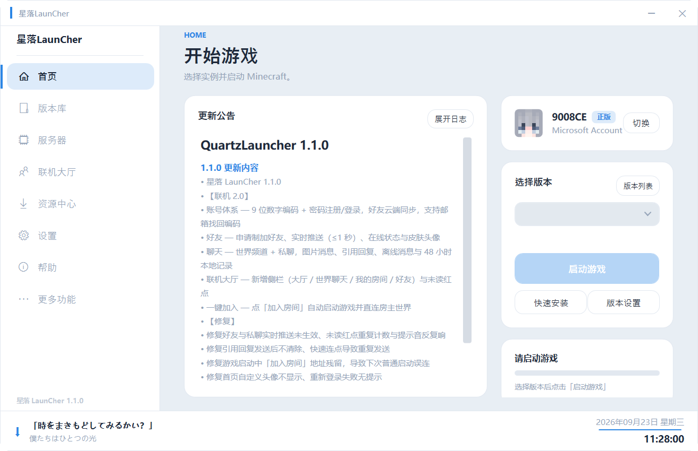
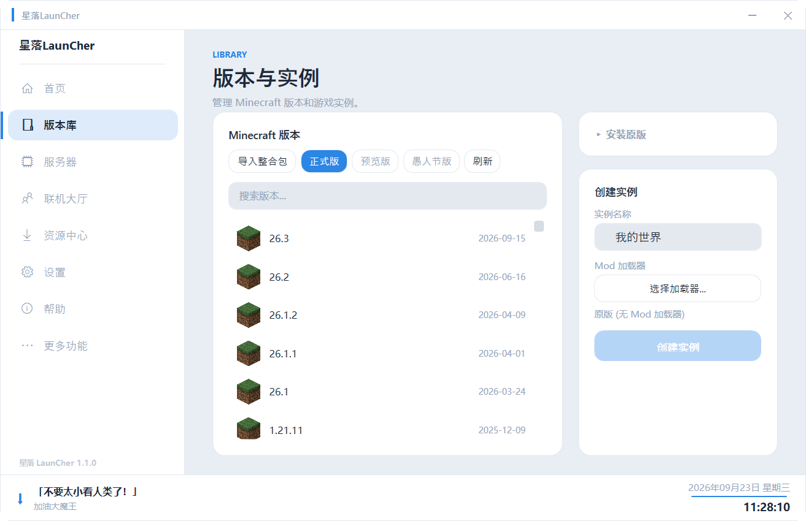
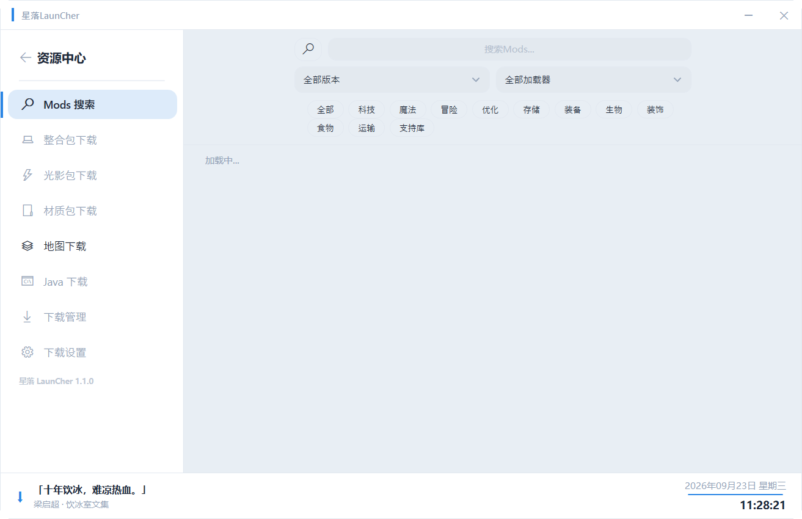
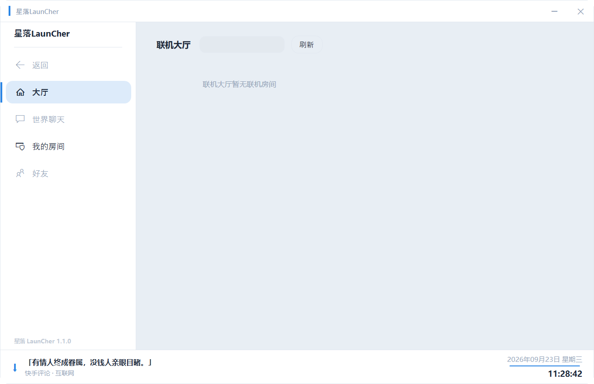
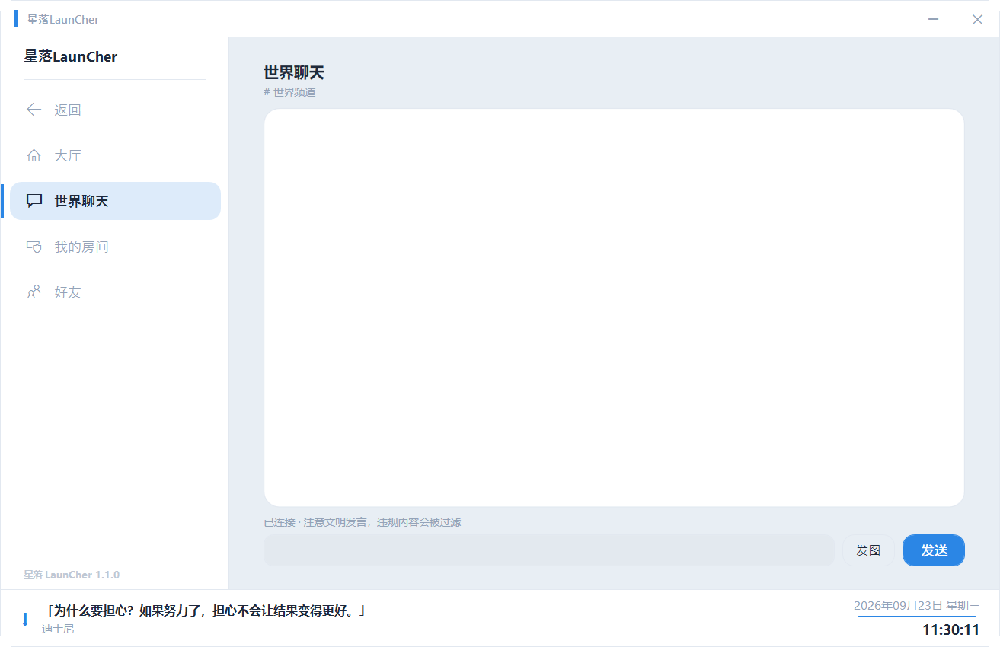
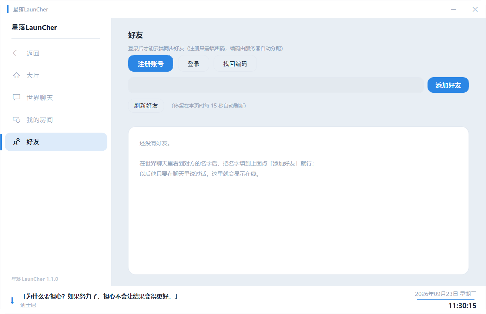
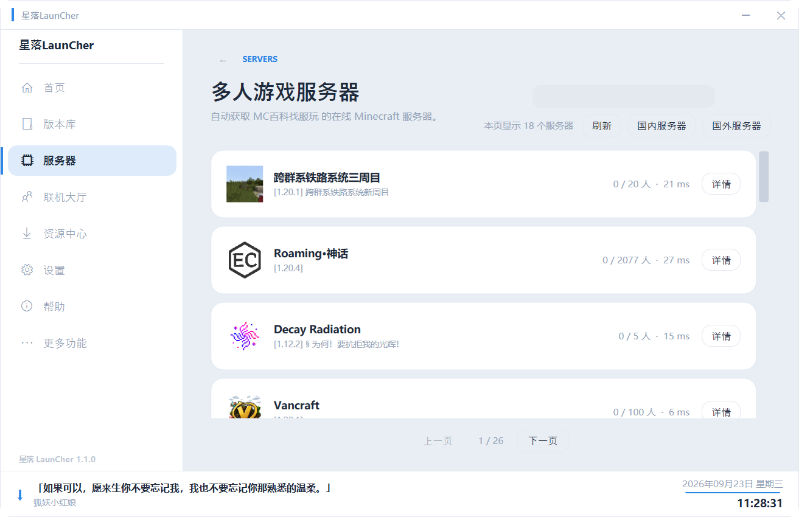
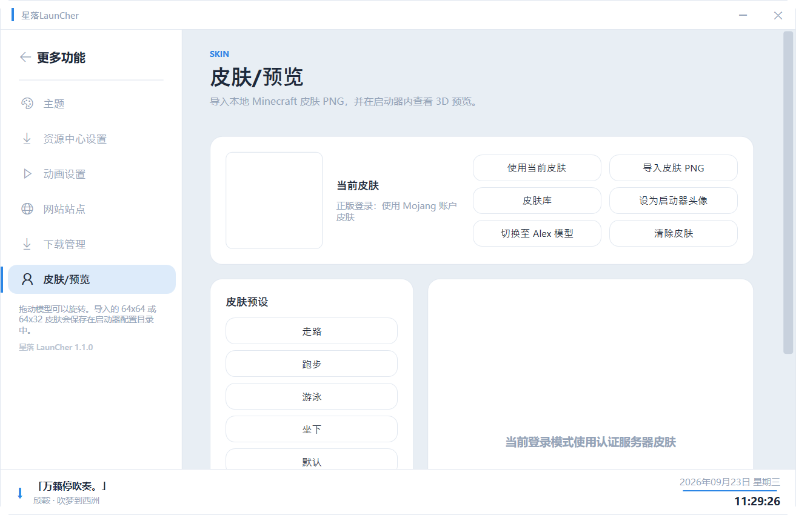
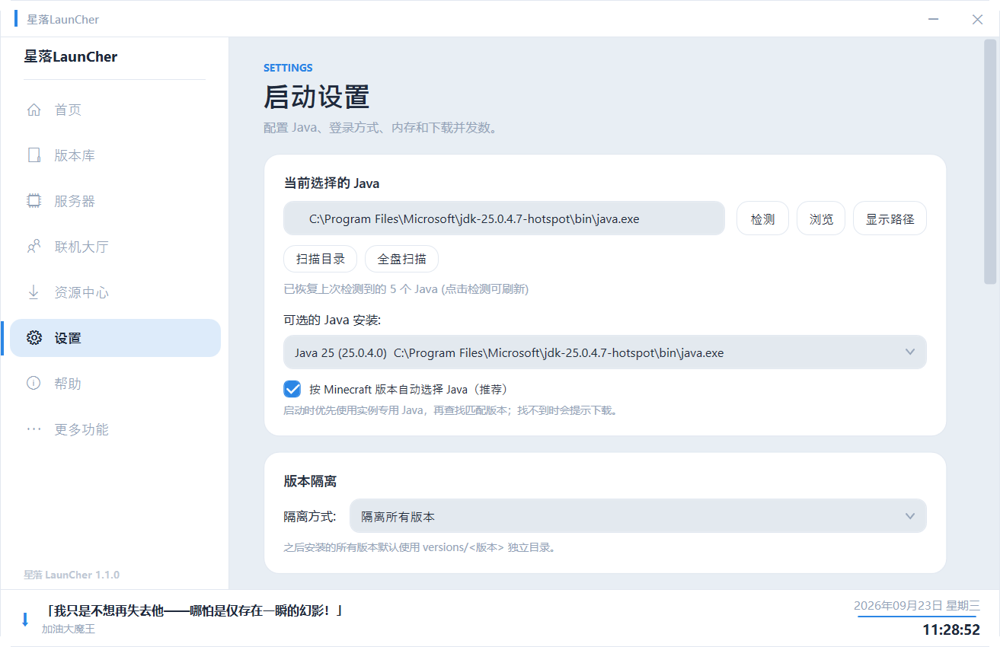
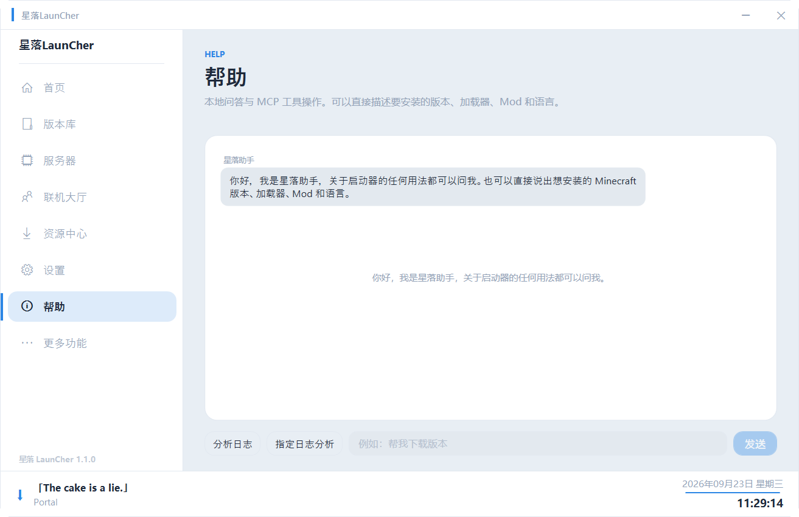

版本控制
按 Minecraft 版本与加载器管理实例，支持 Forge / Fabric / Quilt / NeoForge，启动路径清楚可见。
面向 Minecraft 的轻量启动与内容管理工具。版本、Java、Mod、皮肤与资源，一个控制台全搞定。

System Capabilities
从下载、安装到启动，每一步都替你做完。
按 Minecraft 版本与加载器管理实例，支持 Forge / Fabric / Quilt / NeoForge，启动路径清楚可见。
浏览 Mod、整合包、光影与资源包，自动解析并下载前置依赖，无需手动寻找。
自动检测本地 Java，一键下载 Temurin 运行环境（清华镜像加速），版本匹配不再折腾。
离线模式支持本地皮肤库、Steve / Alex 模型切换与 3D 外层渲染预览。
账号编码、好友申请与实时推送、世界聊天与私聊、一键加入房主世界。
启动时自动检查新版本，后台静默下载，更新完成后自动替换并重启，不打断游戏节奏。
Preview
11 张 1.1.0 实机截图，点左侧切换查看。









Installation
点击「下载 Windows 版」，保存 QuartzLauncher-1.1.0.exe 到任意位置。
选择版本与加载器，点启动。游戏文件、补丁与资源会自动补全。
FAQ
Contact
获取即时支持与更新通知
1124014660反馈 Bug 或提交建议
2840109628@qq.com加后请备注来意
ARM9008CE